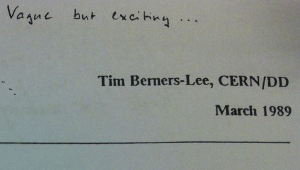
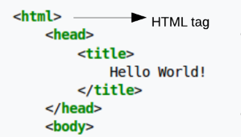
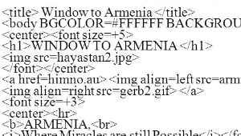
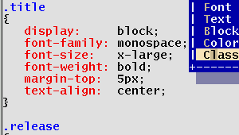
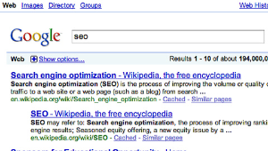
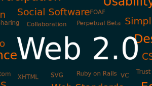
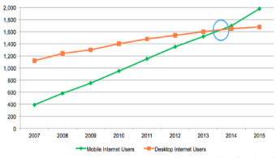

Tegen het einde van de jaren 80 was Tim Berners-Lee klaar om het lastige probleem van informatiebeheer op grotere schaal aan te pakken. Om buy-in te krijgen bij CERN, produceerde hij een bescheiden document met de titel “Information Management: A Proposal”. Gelukkig herkende zijn leidinggevende, Mike Sendall, het potentieel van het idee en gaf het groen licht door de woorden "vaag maar opwindend" langs de bovenkant van het papier te schrijven. Dat voorstel zou het World Wide Web worden.
Berners-Lee specificeerde HTML en schreef de browser- en serversoftware eind 1990. Dat jaar werkten Berners-Lee en CERN-gegevenssysteemingenieur Robert Cailliau samen aan een gezamenlijk verzoek om financiering, maar het project werd niet formeel goedgekeurd door CERN. In zijn persoonlijke aantekeningen uit 1990 noemde hij "enkele van de vele gebieden waarin hypertekst wordt gebruikt" en plaatste een encyclopedie bovenaan. De eerste openbaar beschikbare beschrijving van HTML was een document genaamd "HTML Tags", voor het eerst genoemd op het internet door Tim Berners-Lee eind 1991.
Nadat de HTML en HTML + ontwerpen in het begin van 1994 waren verlopen, heeft de IETF een HTML-werkgroep gemaakt, die in 1995 "HTML 2.0" voltooide, de eerste HTML-specificatie die bedoeld was om te worden behandeld als een standaard waaraan toekomstige implementaties zouden moeten zijn gebaseerd. Tijdens zijn leven zou het de volgende toegevoegde mogelijkheden krijgen: op formulieren gebaseerde bestandsuploads, tabellen, client-side image maps en internationalisatie.
CSS werd voor het eerst voorgesteld door Håkon Wium Lie op 10 oktober 1994. Lie werkte op dat moment met Tim Berners-Lee voor CERN. Verscheidene andere stylesheet-talen voor het web werden rond dezelfde tijd voorgesteld, en discussies op openbare mailinglijsten en binnen het World Wide Web Consortium resulteerden in de introductie van de eerste W3C CSS-aanbeveling (CSS1) in 1996. In het bijzonder was het voorstel van Bert Bos invloedrijk; hij werd co-auteur van CSS1 en wordt beschouwd als mede-maker van CSS.
Tegen 1996 werd het voor de meeste beursgenoteerde ondernemingen duidelijk dat een openbare aanwezigheid op het Web niet langer optioneel was. Hoewel mensen in eerste instantie vooral de mogelijkheden zagen van gratis publiceren en directe wereldwijde informatie, leidde het vergroten van de vertrouwdheid met tweerichtingscommunicatie via het "Web" tot de mogelijkheid van rechtstreekse webgebaseerde handel (e-commerce) en onmiddellijke groepscommunicatie over de hele wereld. Meer dotcoms, die producten op hypertext-webpagina's weergeven, werden toegevoegd aan het web.
Vanaf 2002 werden nieuwe ideeën voor het delen en uitwisselen van content, zoals weblogs en RSS, snel geaccepteerd op het web. Dit nieuwe model voor informatie-uitwisseling, met door gebruikers gegenereerde en door gebruikers aangepaste websites, werd Web 2.0 genoemd. De Web 2.0-explosie zag veel nieuwe servicegerichte startups op zoek naar een nieuw gedemocratiseerd internet. Web 2.0 verwijst niet naar een update van een technische specificatie, maar naar cumulatieve wijzigingen in de manier waarop webpagina's worden gemaakt en gebruikt.
"Web 2.0" werd zelf enorm versneld en slechts een korte tijd later getransformeerd door de toenemende groei van mobiele apparaten. Deze mobiele revolutie betekende dat computers in de vorm van smartphones iets werden wat veel mensen gebruikten. Smartphones werden overal mee naartoe genomen, mensen gebruikten ze om met elkaar “on the move” te kunnen communiceren en mensen maakten foto’s en video’s die ze direct konden delen. Dit alles in tegenstelling tot voorheen, waarbij je dit soort dingen alleen thuis of op het werk kon doen.
In januari 2014 overschreed mobiel internetgebruik het desktopgebruik in de Verenigde Staten. De verschuiving naar mobiele internettoegang is sinds 2007 versneld door de opkomst van grotere multitouch-smartphones en sinds 2010 met de opkomst van multitouch-tablets. Beide platformen bieden betere internettoegang, schermen en mobiele browsers, of op applicaties gebaseerde webervaringen van gebruikers, dan mobiele apparaten van eerdere eerdere generaties.
